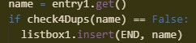
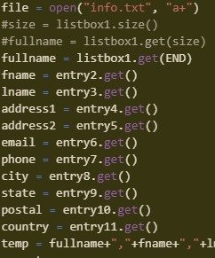

The purpose of my program is to copy contact info from the user and store it for later. The video demonstrates the program copying info input by the user and outputting the same info in their respective boxes. The user input their full name, and put in their contact information such as their email. They then made another contact and opened the contact info of the first person they added, outputting their info. The data in the list represents the contacts in the contact list, all having stored information in each of their names, such as their email or home address. The list manages complexity and is one of the most necessary parts of the program code because this is where all the contact info is linked, if the list was not used, the contact information input by the user would have no contact to be stored into.
|  |  |